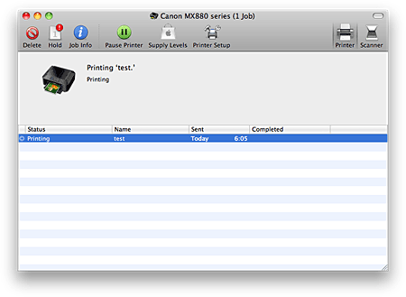
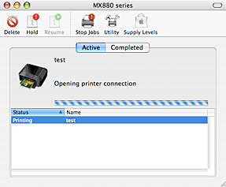

-
Launch the printing status screen
-
If the print data has been sent to the machine
The printing status screen opens automatically. To display the printing status screen, click the (the printer icon) displayed on the Dock.
-
If the print data has not been sent to the machine
Open System Preferences, and select Print & Fax.
To display the printing status screen, select the name of your printer model from Printers list, and then click Open Print Queue....
-
-
Checking the printing status
You can check the name of the file being printed or ready for being printed.
-
If you are using Mac OS X v.10.6.x or Mac OS X v.10.5.x

Deletes the specified print job.
Stops printing the specified document.
Resumes printing the specified document.
Stops printing all documents.
Displayed only when printing of all documents is being stopped, and resumes printing all documents.
-
If you are using Mac OS X v.10.4.11

Deletes the specified print job.
Stops printing the specified document.
Resumes printing the specified document.
Stops printing all documents.
Displayed only when printing of all documents is being stopped, and resumes printing all documents.
-